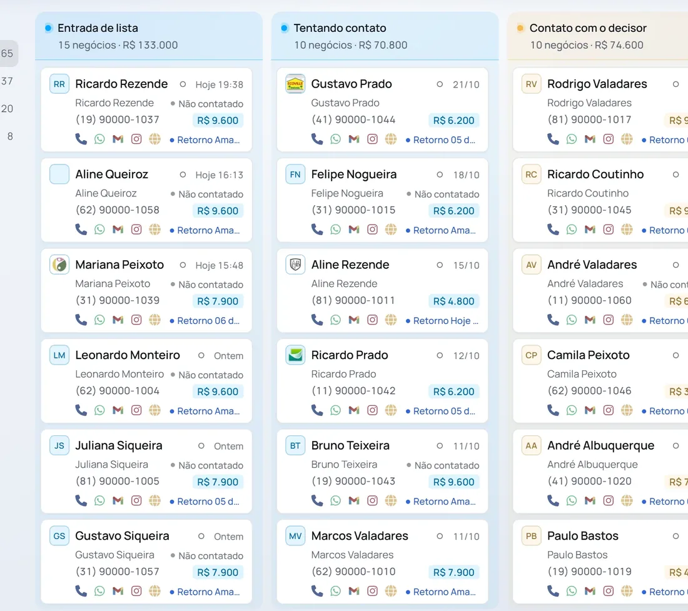
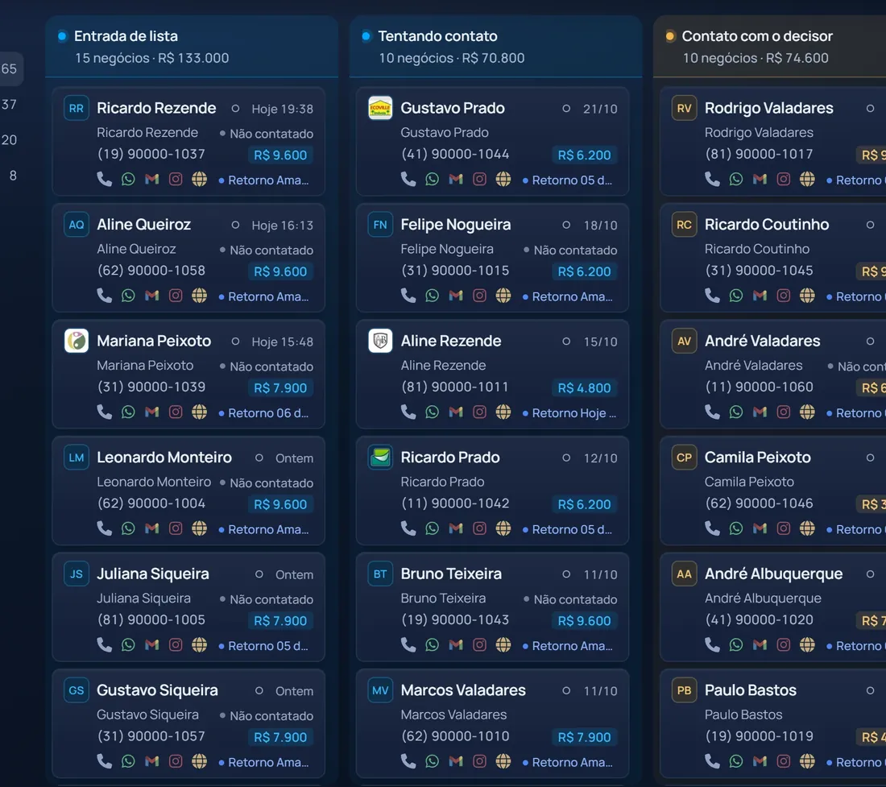
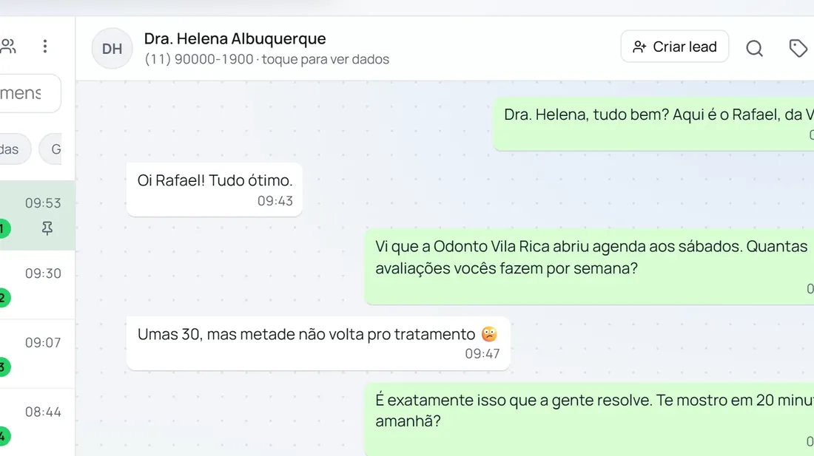
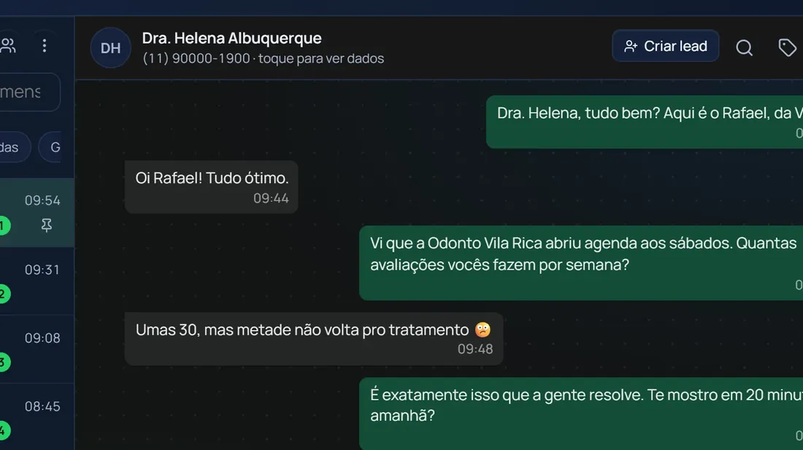
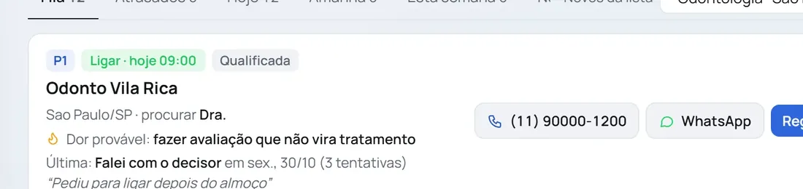
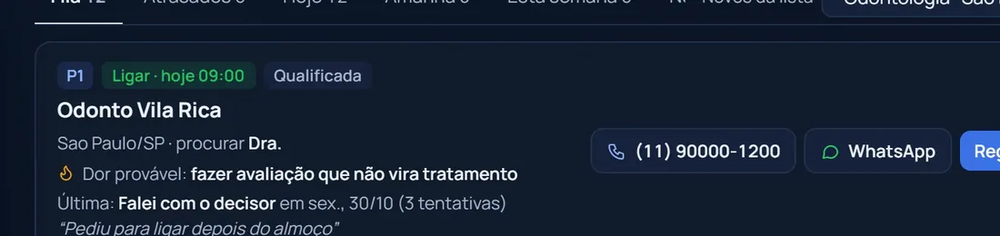
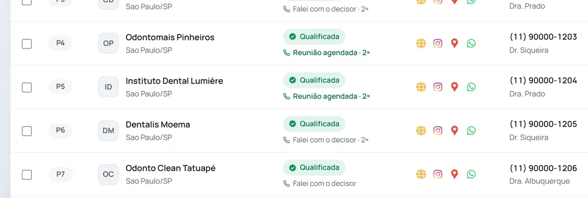
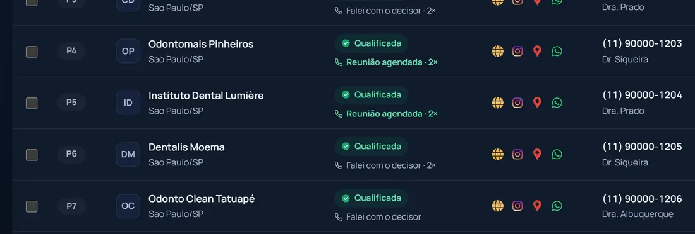
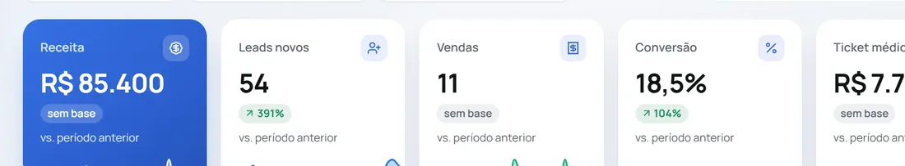
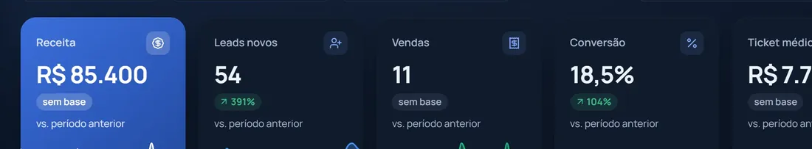

Respondeu tarde
Quem chamou às 19h falou com o concorrente às 19h05. No dia seguinte, a sua resposta chega para ninguém.
Você escolhe o nicho. O Atlas acha o decisor, conversa no WhatsApp e no Instagram, faz o follow-up e organiza o funil. Você só aparece para fechar.
A venda quase nunca se perde no preço. Ela se perde no caminho entre o primeiro oi e o follow-up.
Quem chamou às 19h falou com o concorrente às 19h05. No dia seguinte, a sua resposta chega para ninguém.
38%das vendas perdidas no Brasil morrem porque o cliente parou de responder. É o motivo nº 1.
54%dos times de vendas no Brasil não usam CRM. 38% tocam o funil em planilha.
Recepção, número errado, ninguém atende. O dia acaba e o sócio nunca pegou o telefone.
24em cada 100 empresas brasileiras respondem o lead em até 5 minutos.
100x mais chance de falar com o lead em 5 minutos do que em 30. E 21x mais de qualificar.
InsideSales.com e MIT, 200760% da semana do vendedor vai para tudo, menos vender.
Salesforce, State of Sales 2026WhatsApp e Instagram dentro do CRM, Gmail e Google Agenda junto dos leads, Meta Ads e Google Ads caindo no funil certo, e Make e Zapier para ligar o resto da empresa.
Ver as integrações na demonstraçãoA sua próxima venda está no Atlas.
Lista, conversa, follow-up, funil e agente de IA. Tudo o que vira venda acontece num lugar só.
O Atlas nasceu para quem vende de verdade: acha a empresa certa, chega no decisor, conversa onde o cliente está e não deixa nenhum follow-up para trás. No centro de tudo está o Atlas Orbit, o agente que conhece o seu CRM e diz qual é a próxima ação.
Escolha o nicho e a cidade. Cada empresa passa por todas as etapas, e só entra na lista o que foi conferido.
Você recebe a lista já na ordem de quem ligar primeiro.
37%é a parcela das empresas brasileiras que já definiram o cliente ideal. O resto prospecta no escuro.RD Station, Panorama de Vendas 2026
Escolha o nicho e a cidade. O Atlas monta a lista no CRM, confere cada empresa e coloca no topo quem tem mais chance de atender e comprar.
Cada conversa aparece ao lado da ficha do lead, com a etapa do funil, as etiquetas e o histórico completo. Respondeu, o Atlas já sabe.
Monte o bot arrastando blocos. Ele atende no WhatsApp e no Instagram com o tom da sua empresa, qualifica o lead e move a etapa no CRM sozinho.
A maioria das vendas pede vários contatos. Escolha a rota, coloque os leads e deixe o Atlas lembrar, enviar e parar na hora certa.
Pergunte por voz, texto ou print. O Atlas Orbit lê o seu CRM, as conversas e o seu jeito de vender, e responde com a próxima ação.
A fila do dia mostra quem ligar agora. Você clica, liga pelo computador e o roteiro aparece na tela, já com o nome do sócio, a empresa e a dor do nicho.
Os leads do Meta Ads e do Google Ads caem sozinhos no funil e na etapa certos. O gasto das campanhas se cruza com as vendas do CRM.
Coloque os números do seu time. A conta é sua, não nossa.
Venda que fica na mesa por mês
Ver o Atlas no meu nichoSimulação ilustrativa, não é promessa. Mesmo time, mesmos leads e mesmo ticket: muda só a taxa de fechamento, pela melhora que você escolher. O resultado real depende do seu mercado.
Etapas próprias por funil, Ganho e Perdido no fim, e cada lead com o histórico inteiro.


WhatsApp e Instagram dentro do CRM.


A fila do dia já com a dor provável do lead.


Cada empresa conferida, com o telefone de quem decide.


Receita, leads, vendas e conversão do período, por funil e por vendedor.


Quem está online, ligações, reuniões marcadas e realizadas por vendedor, e o alerta do que precisa de ação.
Cada vendedor tem o próprio agente, que lembra dos leads e do jeito de vender de cada um.
Transferência entre vendedores com etiqueta de origem e cada um vendo só a própria carteira.
Treinamentos de prospecção e vendas para o time inteiro.
O Atlas não faz disparo em massa, não vende lista e não promete venda garantida.
Na demonstração, um especialista mostra qual plano encaixa no seu momento.
Para conhecer
Teste a qualificação com dados reais.
25créditos para testar
Para prospectar todo dia
Lista, ligação, CRM, e-mail e agenda para quem prospecta sozinho.
200créditos por mês
Prospecte, converse e feche no mesmo lugar, com o Atlas Orbit do seu lado.
1.000créditos por mês
Para times
O Pro para cada vendedor, com o líder vendo tudo em tempo real.
2.500 a 8.000créditos por mês, compartilhados
Sob medida
O Atlas montado para operações grandes.
| Recurso | Grátis | Start | Pro | Scale | Enterprise |
|---|---|---|---|---|---|
| Prospecção | |||||
| Créditos por mês (1 crédito = 1 decisor) | 25 para testar | 200 | 800 (2 usuários: 1.000) | 2.000 a 5.000 | Sob medida |
| Listas, qualificação e ficha da empresa | Sim | Sim | Sim | Sim | Sim |
| Número do decisor | Sim | Sim | Sim | Sim | Sim |
| Telefones por empresa | 1 | Até 3 | Todos | Todos | Todos |
| LinkedIn da empresa e do decisor | Não | Não | Sim | Sim | Sim |
| Pesquisa aprofundada dos sócios | Não | Não | Decisor + 1 sócio | Busca completa | Sob medida |
| Atlas Orbit | |||||
| Agente de vendas por voz, texto ou print | Não | Não | Sim | Sim | Sim |
| Perguntas por dia | Não | Não | 30 | 100 por pessoa | Sob medida |
| Inbox | |||||
| WhatsApp dentro do CRM | Não | Não | Sim | Sim | Sim |
| Direct do Instagram | Não | Não | Sim | Sim | Sim |
| Gmail junto dos leads | Não | Sim | Sim | Sim | Sim |
| Mensagens e follow-ups programados | Não | Não | Sim | Sim | Sim |
| CRM e rotina | |||||
| CRM sem limite de leads | Não | Sim | Sim | Sim | Sim |
| Tela Ligar com meta do dia | Não | Sim | Sim | Sim | Sim |
| Google Agenda sincronizado | Não | Sim | Sim | Sim | Sim |
| Importação e exportação | Não | Sim | Sim | Sim | Sim |
| Cadências, chatbot e scripts | |||||
| Cadências multicanal: ligação, WhatsApp, e-mail, Instagram e LinkedIn | Não | Não | Sim | Sim | Sim |
| Chatbot com IA no WhatsApp e no Instagram | Não | Não | Sim | Sim | Sim |
| Roteiro na tela, com objeções em um clique | Não | Não | Sim | Sim | Sim |
| Integrações | |||||
| Meta Ads e Google Ads, com dashboard de tráfego | Não | Não | Sim | Sim | Sim |
| Google Planilhas, webhooks, Make e Zapier | Não | Não | Sim | Sim | Sim |
| Time e suporte | |||||
| Usuários | 1 | 1 | 1 ou 2 | 3 a 20 | Sob medida |
| Painel do líder | Não | Não | Não | Sim | Sim |
| Atlas Academy e treinamentos | Não | Não | Não | Sim | Sim |
| Suporte | Não | Prioritário | Prioritário | Prioritário | |
Só empresas com CNPJ ativo na Receita Federal e canais corporativos verificados.
Cada empresa tem os próprios dados separados, e cada vendedor vê só a própria carteira.
Qualquer pessoa pode pedir a exclusão do seu contato, e ele sai na hora.
Uma plataforma de vendas que junta prospecção, CRM, WhatsApp, Instagram, chatbots, cadências e um agente de IA. Você acha o cliente, conversa, faz o follow-up e fecha sem sair do Atlas.
De dados públicos de empresas: CNPJs ativos da Receita Federal, perfis no Google, sites e redes sociais. O Atlas confere cada canal antes de colocar na sua lista.
Você conecta o WhatsApp e o Instagram da sua empresa e as conversas passam a aparecer dentro do CRM, ao lado da ficha de cada lead, com etapa, etiquetas e histórico.
Não. Ele responde com o tom e as regras da sua empresa, mostra “digitando…” pelo tempo certo e passa a conversa para uma pessoa quando precisa.
Não precisa começar do zero. Dá para importar planilhas, sincronizar com o Google Planilhas e ligar o Atlas aos seus sistemas por webhooks, Make ou Zapier.
Sim. No plano Scale cada vendedor tem o próprio Atlas e o próprio Orbit, e o líder acompanha tudo em tempo real.
Sim. O Atlas é uma plataforma de vendas feita no Brasil, em português, para empresas brasileiras que vendem por WhatsApp e Instagram. A prospecção usa dados públicos de CNPJs ativos e segue a LGPD.
Existem planos para cada fase da operação: Grátis, Start, Pro, Scale e Enterprise. Os valores e o plano certo para o seu time são apresentados na demonstração pelo WhatsApp.
Na demonstração a gente mostra o Atlas rodando no seu nicho e monta a estratégia com você. Dá para sair da call já sabendo o que fazer na primeira semana.
Em 30 minutos você vê o Atlas rodando com leads do seu nicho e sai com a estratégia pronta.